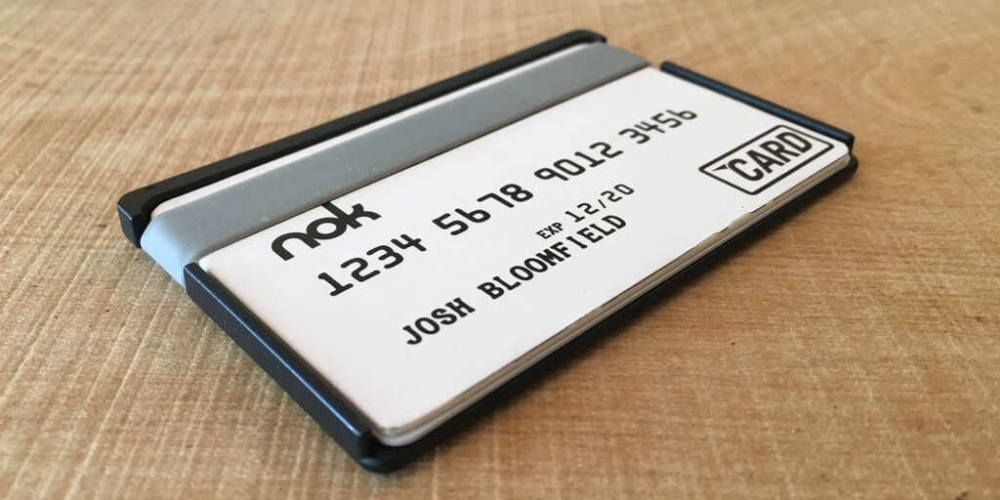

<!DOCTYPE html>
<html lang="en">
  <head>
    <title>Tyrale Bloomfield Ux Evangelist, Designer, Director, Creative</title>
    <link rel="stylesheet" href="https://cdnjs.cloudflare.com/ajax/libs/animsition/4.0.0/css/animsition.min.css">
    <link href="css/app.css" rel="stylesheet">
    <link rel="apple-touch-icon" href="apple-touch-icon-iphone.png">
    <link rel="apple-touch-startup-image" href="startup-image.png">
    <link rel="shortcut icon" href="../favicon.ico">
    <meta name="description" content="Porfolio of Tyrale Bloomfield, UX Evangelist and Designer">
    <meta name="viewport" content="width=device-width, initial-scale=1">
    <meta name="apple-mobile-web-app-capable" content="yes">
    <meta name="apple-mobile-web-app-status-bar-style" content="black">
    <script src="//code.jquery.com/jquery-1.10.2.min.js"></script>
    <script type="text/javascript" src="js/client.js"></script>
    <script type="text/javascript" src="//use.typekit.net/eaz2aio.js"></script>
    <script type="text/javascript">try{Typekit.load();}catch(e){}</script>
  </head>
</html>
<body class="tk-chaparral-pro"></body>
<div class="bio">
  <h1 class="tk-chaparral-pro"> <span class="line">I'm generally known as,</span><span class="name">Tyrale.</span></h1>
</div>
<div class="dontcare">
  <p>
    <input type="checkbox" name="paragraph" id="paragraph">
    <label for="paragraph"></label><span>You came here to see what I can </span><span>produce, or possibly see how I think. </span><span>I have designed experiences for over a decade, </span><span>mentored and managed teams of +30 Designers, and </span><span>focused my work on smart, fresh UX. </span><span>Below you will find a few cases. </span><span>You can also tap this block if you are so inclined to read more about me. My work history is on <a href="http://linkedin.com/in/tyrale">Linkedin</a> and life choices can be seen on</span><span> <a href="http://instagram.com/tyrale">Instagram.</a>&nbsp;Feel free to reach out anywhere.  </span><span>Just google <a href="http://bit.ly/1KWsxvp">"tyrale"</a> , I am pretty easy to find.</span>
  </p>
</div>
<div class="whatmatters">
  <h5 class="tk-chaparral-pro"><i class="icon-down"></i>Things I have built<i class="icon-down"></i></h5>
</div>
<div class="work">
  <ul class="cats">
    <li class="project"><a href="http://ordernok.com"></a>
      <h3 class="tk-chaparral-pro">The result of a deliberate &amp; relentless pursuit of pure functionality.</h3>
      <h2 class="tk-chaparral-pro"><a href="http://ordernok.com">nok</a></h2>
    </li>
    <li class="project"><a href="uxtriage"></a>
      <h3 class="tk-chaparral-pro">Designing a new UX process.</h3>
      <h2 class="tk-chaparral-pro"><a href="uxtriage">UX Triage</a></h2>
    </li>
    <li class="project"><a href="http://bit.ly/1GpePz8"></a>
      <h3 class="tk-chaparral-pro">Build a delightful new way to wordplay.</h3>
      <h2 class="tk-chaparral-pro"><a href="http://bit.ly/1GpePz8">Wordplay +/-</a></h2>
    </li>
    <li class="project"><a href="http://bit.ly/1KR4BM7"></a>
      <h3 class="tk-chaparral-pro">Designing hardware integration to a mobile platform with IDEO.</h3>
      <h2 class="tk-chaparral-pro"><a href="http://bit.ly/1KR4BM7">Shade.io</a></h2>
    </li>
    <li class="project"><a href="http://bit.ly/1OMShjM"></a>
      <h3 class="tk-chaparral-pro">Create a product that will empower Students and Brands.</h3>
      <h2 class="tk-chaparral-pro"><a href="http://bit.ly/1OMShjM">whurk</a></h2>
    </li>
    <li class="project"><a href="http://bit.ly/1NTRyfq"></a>
      <h3 class="tk-chaparral-pro">Audit UX to optimize conversion and EPC(earnings per click).</h3>
      <h2 class="tk-chaparral-pro"><a href="http://bit.ly/1NTRyfq">ReadyCart</a></h2>
    </li>
    <li class="project"><a href="http://bit.ly/1QPKNtY"></a>
      <h3 class="tk-chaparral-pro">Audit UX/UI to encourage homepage CTR(click-thru ratio)</h3>
      <h2 class="tk-chaparral-pro"><a href="http://bit.ly/1QPKNtY">MyManny</a></h2>
    </li>
    <li class="project"><a href="http://verondemand.com"></a>
      <h3 class="tk-chaparral-pro">Design a platform to stream culture specific content.</h3>
      <h2 class="tk-chaparral-pro"><a href="http://verondemand.com">Ver on Demand</a></h2>
    </li>
    <li class="project"><a href="http://tyrale.com/atomicUX/"></a>
      <h3 class="tk-chaparral-pro">Design mobile UX for physician.</h3>
      <h2 class="tk-chaparral-pro"><a href="http://tyrale.com/atomicUX/">PD Note</a></h2>
    </li>
    <li class="project"><a href="http://tyrale.com/medhost/"></a>
      <h3 class="tk-chaparral-pro">Audit UX of physician EHR.</h3>
      <h2 class="tk-chaparral-pro"><a href="http://tyrale.com/medhost/">Patient Logic</a></h2>
    </li>
    <li class="project"><a href="http://tyrale.com/guard/"></a>
      <h3 class="tk-chaparral-pro">Audit UX/UI to increase CTR and qualified leads.</h3>
      <h2 class="tk-chaparral-pro"><a href="http://tyrale.com/guard/">Army National Guard</a></h2>
    </li>
  </ul>
</div>
<div class="history">
  <h5 class="tk-chaparral-pro"><i class="icon-down"></i>More things I have built<i class="icon-down"></i></h5>
  <ul class="timeline">
    <li><span class="tk-chaparral-pro title"><a>Joker Greeting</a><span class="type">Gag Greeting Cards</span></span><span class="tk-chaparral-pro date">April 2015<span class="thing">Concept &amp; Branding</span></span></li>
    <li><span class="tk-chaparral-pro title"><a>Story Shelf</a><span class="type">Web App</span></span><span class="tk-chaparral-pro date">Jan 2015<span class="thing">Concept, Branding, Design</span></span></li>
    <li><span class="tk-chaparral-pro title"><a>CommonWell Medical</a><span class="type">Web App</span></span><span class="tk-chaparral-pro date">Dec 2014<span class="thing">UX Audit</span></span></li>
    <li><span class="tk-chaparral-pro title"><a>Point Clear Solutions</a><span class="type">Web App</span></span><span class="tk-chaparral-pro date">Aug 2014<span class="thing">UX Audit</span></span></li>
    <li><span class="tk-chaparral-pro title"><a>Spartan</a><span class="type">Mobile &amp; Web Apps</span></span><span class="tk-chaparral-pro date">July 2014<span class="thing">Full Stack</span></span></li>
    <li><span class="tk-chaparral-pro title"><a>Patient Logic</a><span class="type">Web Apps</span></span><span class="tk-chaparral-pro date">2013-14<span class="thing">Full Stack</span></span></li>
    <li><span class="tk-chaparral-pro title"><a>ColorShift</a><span class="type">iOS App</span></span><span class="tk-chaparral-pro date">Nov 2012<span class="thing">Full Stack</span></span></li>
    <li><span class="tk-chaparral-pro title"><a>ProperCut</a><span class="type">iOS App</span></span><span class="tk-chaparral-pro date">Feb 2012<span class="thing">Full Stack</span></span></li>
    <li><span class="tk-chaparral-pro title"><a>SongWriter+</a><span class="type">iOS App</span></span><span class="tk-chaparral-pro date">Jan 2012<span class="thing">Full Stack</span></span></li>
    <li><span class="tk-chaparral-pro title"><a>LunchRadio</a><span class="type">iOS App</span></span><span class="tk-chaparral-pro date">April 2014<span class="thing">Full Stack</span></span></li>
    <li><span class="tk-chaparral-pro title"><a>Army National Guard History</a><span class="type">Mobile &amp; Web Apps</span></span><span class="tk-chaparral-pro date">Dec 2011<span class="thing">Concept, Design, Branding</span></span></li>
    <li><span class="tk-chaparral-pro title"><a>Soldier Fit</a><span class="type">iOS App</span></span><span class="tk-chaparral-pro date">Dec 2011<span class="thing">Concept, Design, Branding</span></span></li>
    <li><span class="tk-chaparral-pro title"><a>Your Anonymous Friend</a><span class="type">iOS App</span></span><span class="tk-chaparral-pro date">Dec 2011<span class="thing">Full Stack</span></span></li>
    <li><span class="tk-chaparral-pro title"><a>Nossi College of Art</a><span class="type">Website</span></span><span class="tk-chaparral-pro date">Nov 2011<span class="thing">Concept, UX, UI</span></span></li>
    <li><span class="tk-chaparral-pro title"><a>Noah for iPad</a><span class="type">iOS App</span></span><span class="tk-chaparral-pro date">Aug 2011<span class="thing">Full Stack</span></span></li>
    <li><span class="tk-chaparral-pro title"><a>Bulwark</a><span class="type">Website</span></span><span class="tk-chaparral-pro date">Aug 2011<span class="thing">Concept, UX, UI</span></span></li>
    <li><span class="tk-chaparral-pro title"><a>Semper Fi Fund</a><span class="type">Website</span></span><span class="tk-chaparral-pro date">July 2011<span class="thing">UX &amp; UI</span></span></li>
    <li><span class="tk-chaparral-pro title"><a>RedKap</a><span class="type">Website</span></span><span class="tk-chaparral-pro date">July 2011<span class="thing">UX &amp; UI</span></span></li>
    <li><span class="tk-chaparral-pro title"><a>Second Harvest Food Bank</a><span class="type">Website</span></span><span class="tk-chaparral-pro date">June 2011<span class="thing">UX &amp; UI</span></span></li>
    <li><span class="tk-chaparral-pro title"><a>TwiceDaily</a><span class="type">Website</span></span><span class="tk-chaparral-pro date">May 2011<span class="thing">Concept, UX, UI</span></span></li>
    <li><span class="tk-chaparral-pro title"><a>Barrett</a><span class="type">Website</span></span><span class="tk-chaparral-pro date">July 2011<span class="thing">UX &amp; UI</span></span></li>
    <li><span class="tk-chaparral-pro title"><a>Kimber</a><span class="type">Website</span></span><span class="tk-chaparral-pro date">June 2011<span class="thing">UX &amp; UI</span></span></li>
    <li><span class="tk-chaparral-pro title"><a>ANG 1 Million Faces</a><span class="type">Facebook App</span></span><span class="tk-chaparral-pro date">April 2011<span class="thing">Concept, UX, UI</span></span></li>
    <li><span class="tk-chaparral-pro title"><a>Army National Guard Facebook</a><span class="type">Website</span></span><span class="tk-chaparral-pro date">Dec 2010<span class="thing">Concept, UX, UI</span></span></li>
    <li><span class="tk-chaparral-pro title"><a>The Army National Guard</a><span class="type">Website</span></span><span class="tk-chaparral-pro date">Nov 2010<span class="thing">Full Stack</span></span></li>
    <li><span class="tk-chaparral-pro title"><a>W hotel</a><span class="type">Website</span></span><span class="tk-chaparral-pro date">Aug 2009<span class="thing">UX &amp; UI</span></span></li>
    <li><span class="tk-chaparral-pro title"><a>City Center</a><span class="type">Website</span></span><span class="tk-chaparral-pro date">March 2009<span class="thing">UX &amp; UI</span></span></li>
    <li><span class="tk-chaparral-pro title"><a>Palms Fantasy</a><span class="type">Website</span></span><span class="tk-chaparral-pro date">Feb 2008<span class="thing">Concept, UX, UI, Branding</span></span></li>
    <li><span class="tk-chaparral-pro title"><a>MGM Mirage</a><span class="type">Website</span></span><span class="tk-chaparral-pro date">Dec 2009<span class="thing">UX &amp; UI</span></span></li>
    <li><span class="tk-chaparral-pro title"><a>Palms Place</a><span class="type">Website &amp; Branding</span></span><span class="tk-chaparral-pro date">Sept 2008<span class="thing">Concept, UX, UI, Branding</span></span></li>
    <li><span class="tk-chaparral-pro title"><a>St. Regis</a><span class="type">Website</span></span><span class="tk-chaparral-pro date">Dec 2007<span class="thing">Concept, UX, UI</span></span></li>
    <li><span class="tk-chaparral-pro title"><a>Planet Hollywood</a><span class="type">Website &amp; Branding</span></span><span class="tk-chaparral-pro date">Nov 2007<span class="thing">Concept, UX, UI, Branding</span></span></li>
    <li><span class="tk-chaparral-pro title"><a>Tyrale.com</a><span class="type">Everything</span></span><span class="tk-chaparral-pro date">Jan 2007<span class="thing">Full Stack</span></span></li>
    <li><span class="tk-chaparral-pro title"><a>Palazzolo Design</a><span class="type">Website &amp; Branding</span></span><span class="tk-chaparral-pro date">Dec 2006<span class="thing">Full Stack</span></span></li>
  </ul>
</div>
<p class="foot">Full Stack means anything and everything. From concept to coding, sales to support, social media to user encyclopedia.
</p>